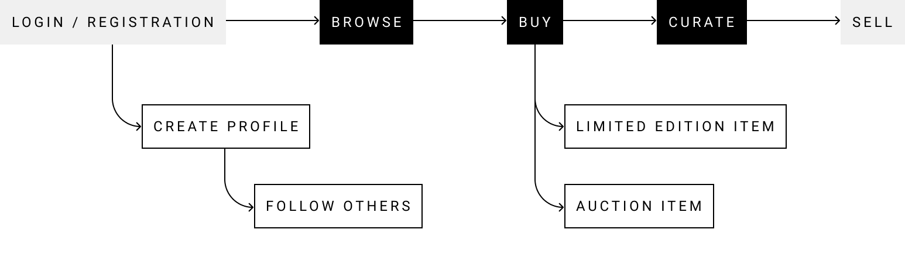
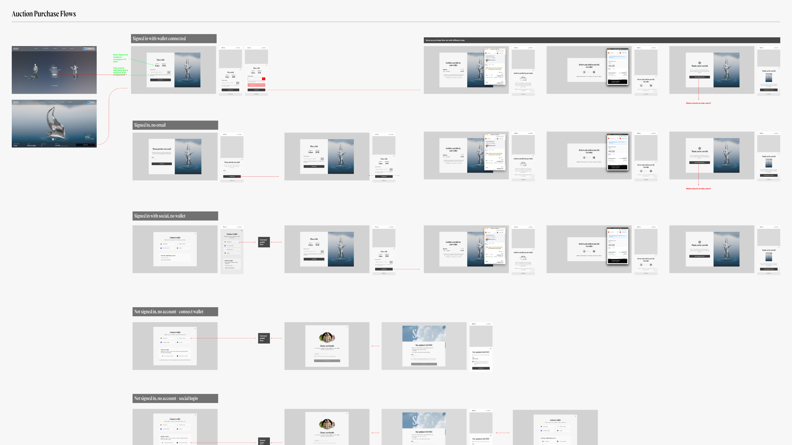
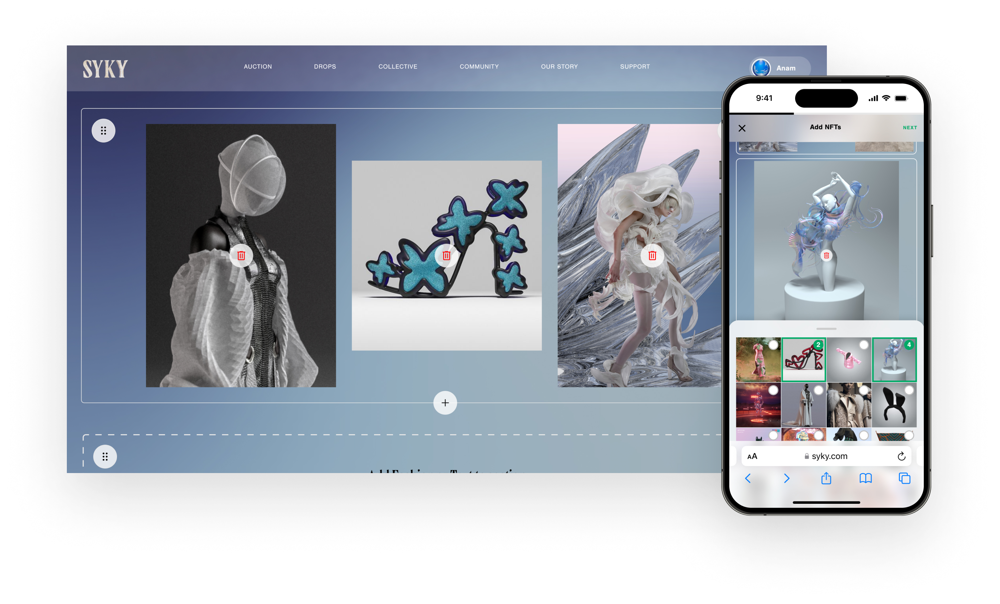
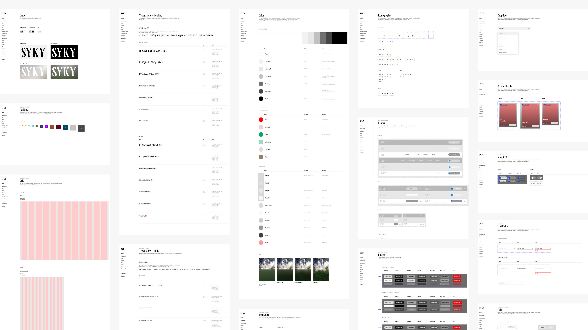

MVP Launch for a Web3 Fashion Marketplace
SYKY is a community-driven platform where digital fashion designers release limited-edition collections and collectors showcase their NFT wardrobes. With London Fashion Week three months away, the team needed an MVP that supported discovery, purchase, and community-building.
How do we design a premium, coherent marketplace experience that works for both creators and collectors, within a compressed timeline and rapidly evolving constraints?
• Three-month window to ship an MVP aligned with London Fashion Week
• Web3 complexity (wallet setup, auctions, crypto payments) created barriers for new users
• Collections needed to feel bespoke, while engineering required reusable templates
• Brand visuals came from an external agency and were inconsistent across internal work
Working closely with product owners, engineers, and early creators, we identified a single golden path to anchor the MVP:
• Browse exclusive designer drops
• Purchase or bid on limited-edition items
• Curate and display a personal NFT collection
This path shaped scoping, prioritisation, and design decisions throughout the project.

Creators wanted their drops to express a distinct visual identity, while engineering needed a stable, reusable system.
Solution: We designed a single layout structure and pushed differentiation through asset-driven customisation. By varying artwork scale, imagery formats, and motion treatments, each collection gained its own character while the underlying codebase remained consistent.
To reinforce the brand, we incorporated SYKY's "corridor" motif as subtle abstract motion backgrounds. This added depth and atmosphere without compromising legibility or performance, helping the MVP feel intentional rather than provisional.
Many users didn't have a wallet, and leaving the site to set one up introduced significant drop-off.
Solution: We integrated MoonPay to support fiat purchases and top-ups directly within SYKY. This removed the biggest blocker for first-time collectors and kept the purchase journey contained, fast, and approachable.

For a fashion-led platform, ownership alone wasn't enough. Users needed a way to express themselves and discover others.
Solution: We designed member profiles where users could follow each other and curate a personal NFT gallery. This positioned SYKY as both a marketplace and a social space, reinforcing the idea of collecting as identity and visibility.

With only weeks left before launch, collaboration with engineering became critical.
• Daily check-ins to unblock decisions
• Weekly or bi-weekly grooming to validate flows before sprint delivery
• Rapid iteration to cover edge cases ahead of implementation
This cadence kept scope realistic and avoided last-minute compromises.
An external agency had delivered initial concepts while in-house designers produced new features in parallel. Visual inconsistency was growing.
Solution: I audited existing designs to isolate the core visual language, removed redundant styles, and created a reusable component system. This allowed designers to move quickly while maintaining coherence and high fidelity across the product.

The MVP launched successfully in time for London Fashion Week.
Engagement was strong from day one:
• One item from the debut Sunw collection sold out within two days
• The auction piece received bids until the final hour
The MVP established a clear product vision and validated the core experience around drops, purchasing, and community.